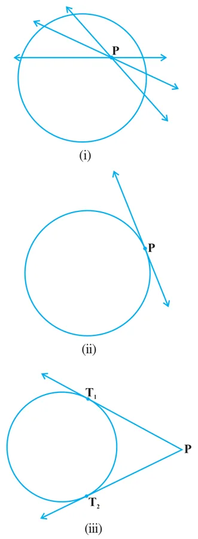
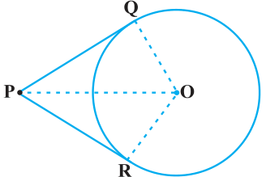
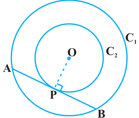
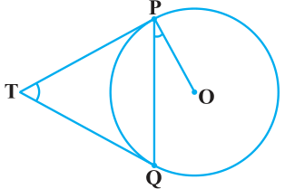
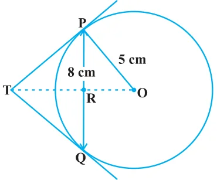

To get an idea of the number of tangents from a point on a circle, let us perform the following activity:

Activity 3 : Draw a circle on a paper. Take a point P inside it. Can you draw a tangent to the circle through this point? You will find that all the lines through this point intersect the circle in two points. So, it is not possible to draw any tangent to a circle through a point inside it [see Fig. 10.6 (i)].
Next take a point P on the circle and draw tangents through this point. You have already observed that there is only one tangent to the circle at such a point [see Fig. 10.6 (ii)].
Finally, take a point P outside the circle and try to draw tangents to the circle from this point. What do you observe? You will find that you can draw exactly two tangents to the circle through this point [see Fig. 10.6 (iii)].
We can summarise these facts as follows:
Case 1 : There is no tangent to a circle passing through a point lying inside the circle.
Case 2 : There is one and only one tangent to a circle passing through a point lying on the circle.
Case 3 : There are exactly two tangents to a circle through a point lying outside the circle.
In Fig. 10.6 (iii), \(\text{T}_{1}\) and \(\text{T}_{2}\) are the points of contact of the tangents \(\text{PT}_{1}\) and \(\text{PT}_{2}\) respectively.
The length of the segment of the tangent from the external point P and the point of contact with the circle is called the length of the tangent from the point P to the circle.
Note that in Fig. 10.6 (iii), \(\text{PT}_{1}\) and \(\text{PT}_{2}\) are the lengths of the tangents from P to the circle. The lengths \(\text{PT}_{1}\) and \(\text{PT}_{2}\) have a common property. Can you find this? Measure \(\text{PT}_{1}\) and \(\text{PT}_{2}\). Are these equal? In fact, this is always so. Let us give a proof of this fact in the following theorem.
Theorem 10.2 : The lengths of tangents drawn from an external point to a circle are equal.

Proof :
We are given a circle with centre O, a point P lying outside the circle and two tangents PQ, PR on the circle from P (see Fig. 10.7). We are required to prove that PQ = PR.
For this, we join OP, OQ and OR. Then \(\angle \text{OQP}\) and \(\angle \text{ORP}\) are right angles, because these are angles between the radii and tangents, and according to Theorem 10.1 they are right angles. Now in right triangles OQP and ORP,
\( \text{OQ} = \text{OR} \quad \text{(Radii of the same circle)} \)
\( \text{OP} = \text{OP} \quad \text{(Common)} \)
Therefore, \(\triangle \text{OQP} \cong \triangle \text{ORP}\) (RHS)
This gives PQ = PR (CPCT)
Remarks
- 1.The theorem can also be proved by using the Pythagoras Theorem as follows:
\( \text{PQ}^{2} = \text{OP}^{2} - \text{OQ}^{2} = \text{OP}^{2} - \text{OR}^{2} = \text{PR}^{2} \quad (\text{As OQ} = \text{OR}) \)
which gives PQ = PR.
- 2.Note also that \(\angle \text{OPQ} = \angle \text{OPR}\). Therefore, OP is the angle bisector of \(\angle \text{QPR}\), i.e., the centre lies on the bisector of the angle between the two tangents.
Let us take some examples.
Example 1 :
Prove that in two concentric circles, the chord of the larger circle, which touches the smaller circle, is bisected at the point of contact.

Solution :
We are given two concentric circles \(\text{C}_{1}\) and \(\text{C}_{2}\) with centre O and a chord AB of the larger circle \(\text{C}_{1}\) which touches the smaller circle \(\text{C}_{2}\) at the point P (see Fig. 10.8). We need to prove that AP = BP.
Let us join OP. Then, AB is a tangent to \(\text{C}_{2}\) at P and OP is its radius. Therefore, by Theorem 10.1,
\( \text{OP} \perp \text{AB} \)
Now AB is a chord of the circle \(\text{C}_{1}\) and \(\text{OP} \perp \text{AB}\). Therefore, OP is the bisector of the chord AB, as the perpendicular from the centre bisects the chord,
i.e., AP = BP
Example 2 :
Two tangents TP and TQ are drawn to a circle with centre O from an external point T. Prove that \(\angle \text{PTQ} = 2\,\angle \text{OPQ}\).

Solution :
We are given a circle with centre O, an external point T and two tangents TP and TQ to the circle, where P, Q are the points of contact (see Fig. 10.9). We need to prove that
\( \angle \text{PTQ} = 2\,\angle \text{OPQ} \)
Let \(\angle \text{PTQ} = \theta\)
Now, by Theorem 10.2, TP = TQ. So, TPQ is an isosceles triangle.
Therefore,
\( \angle \text{TPQ} = \angle \text{TQP} = \dfrac{1}{2}(180^{\circ} - \theta) = 90^{\circ} - \dfrac{1}{2}\theta \)
Also, by Theorem 10.1, \(\angle \text{OPT} = 90^{\circ}\)
So,
\( \angle \text{OPQ} = \angle \text{OPT} - \angle \text{TPQ} = 90^{\circ} - \left(90^{\circ} - \dfrac{1}{2}\theta\right) \)
\( = \dfrac{1}{2}\theta = \dfrac{1}{2}\angle \text{PTQ} \)
This gives \(\angle \text{PTQ} = 2\,\angle \text{OPQ}\)
Example 3 :
PQ is a chord of length 8 cm of a circle of radius 5 cm. The tangents at P and Q intersect at a point T (see Fig. 10.10). Find the length TP.

Solution :
Join OT. Let it intersect PQ at the point R. Then \(\triangle \text{TPQ}\) is isosceles and TO is the angle bisector of \(\angle \text{PTQ}\). So, \(\text{OT} \perp \text{PQ}\) and therefore, OT bisects PQ which gives PR = RQ = 4 cm.
Also,
\( \text{OR} = \sqrt{\text{OP}^{2} - \text{PR}^{2}} = \sqrt{5^{2} - 4^{2}}\ \text{cm} = 3\ \text{cm}. \)
Now, \(\angle \text{TPR} + \angle \text{RPO} = 90^{\circ} = \angle \text{TPR} + \angle \text{PTR}\) (Why?)
So, \(\angle \text{RPO} = \angle \text{PTR}\)
Therefore, right triangle TRP is similar to the right triangle PRO by AA similarity.
This gives
\( \dfrac{\text{TP}}{\text{PO}} = \dfrac{\text{RP}}{\text{RO}}, \ \text{i.e.,}\ \dfrac{\text{TP}}{5} = \dfrac{4}{3} \ \text{or}\ \text{TP} = \dfrac{20}{3}\ \text{cm}. \)
Note : TP can also be found by using the Pythagoras Theorem, as follows:
Let TP = \(x\) and TR = \(y\). Then
\( x^{2} = y^{2} + 16 \quad (\text{Taking right } \triangle \text{PRT}) \qquad (1) \)
\( x^{2} + 5^{2} = (y + 3)^{2} \quad (\text{Taking right } \triangle \text{OPT}) \qquad (2) \)
Subtracting (1) from (2), we get
\( 25 = 6y - 7 \quad \text{or} \quad y = \dfrac{32}{6} = \dfrac{16}{3} \)
Therefore,
\( x^{2} = \left(\dfrac{16}{3}\right)^{2} + 16 = \dfrac{16}{9}(16 + 9) = \dfrac{16 \times 25}{9} \quad [\text{From (1)}] \)
or
\( x = \dfrac{20}{3} \)